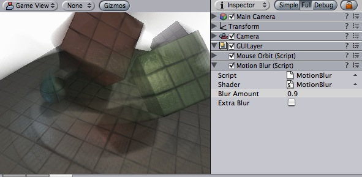

Previous
Previous
Motion Blur image effect enhances fast-moving scenes by leaving "motion trails" of previously rendered frames.
As with the other image effects, Motion Blur is only available in Unity Pro. Make sure to have the Pro Standard Assets installed.

Motion Blur effect applied to the rotating scene
| Property: | Function: |
|---|---|
| How much of the previous frames to leave in the image. Higher values make longer motion trails. | |
| If checked, this makes motion trails more blurry, by applying some extra blur to previous frames. |
Tips:
- You need to attach the image effect to the camera while edit mode. To see the effect you have to go into playmode afterwards.
Motion Blur effect works all graphics cards that support rendering to a texture. E.g. GeForce2, Radeon 7000 and up. All image effects automatically disable themselves when they can not run on an end-users graphics card.